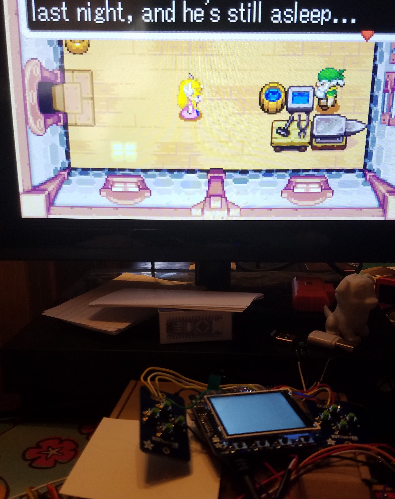
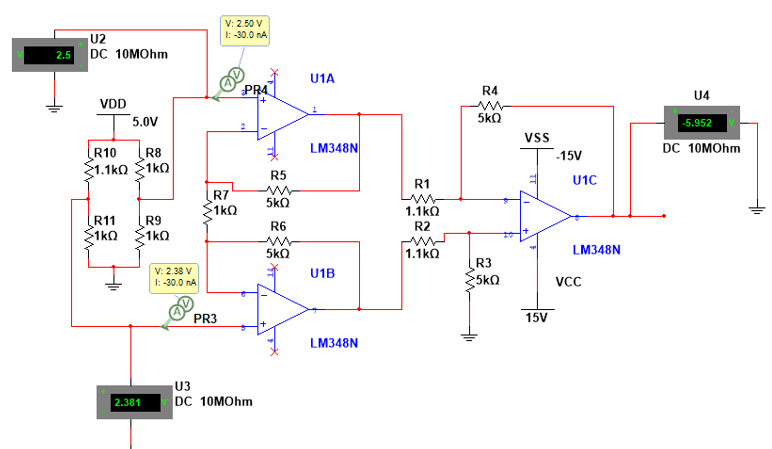
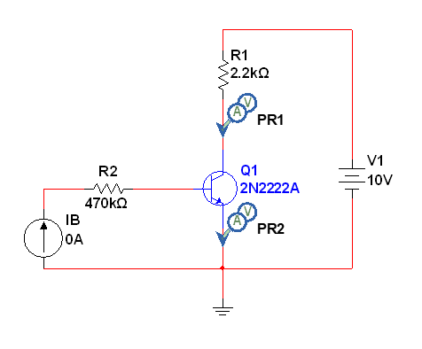
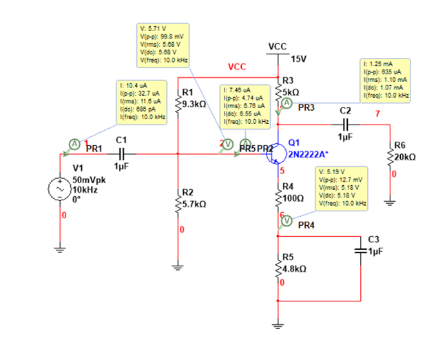
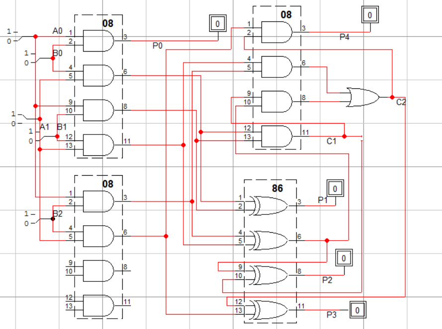
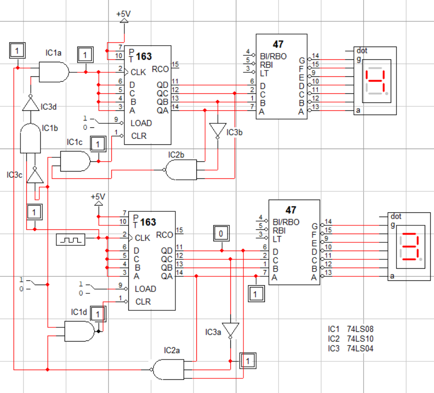

My electronics study has helped my degree of understanding computer engineering. It helped
my understanding of the way computers worked at base level in computer architecture and logic.
It also allowed me to understand the way computers communicate in networks and even helped me understand
how to transmit the data from one computer to another. Electronics helped leave no stones unturned when
dealing with computers and electronics.
Listed below are the models that will be showcased below.
.
- Custom Handheld Console
- Instrumentation Amplifier
- Basic Transistors
- BJT Amplifier
- 3x2 Bit Multiplier
- 60 Second Clock
Custom Handheld

Shown on the left is a picture of me testing the handheld before constructing it together in its shell. A video of me testing it inside its
shell can be seen in the youtube link here.
Instrumentation Amplifier

Shown on the left is an instrumentation amplifier circuit. This is only one of the most basic uses
of the powerful OpAmp. I have used OpAmps for a myriad of reasons while getting my degree and I believe these are one
of the most versatile components.
Basic Transistors

Transistors are quite frankly the things that make the world go round. They are the components that undeniably allowed
the information age to even exist. These are great switches to allow digitization and they are great components for
most circuits.
BJT Amplifier

Transistors are so important that I decided to show them twice. This transistor to the left is being used as an
amplifier. This is another reason transistors are important in the work of electronics and another reason I have
used transistors multiple times throughout university.
3x2 Bit Multiplier

Using digital logic, a person can make a lot of things in electronics including basic computations. Digital
logic allows for many projects to have embedded electronics to perform actions instead of relying too heavily
on microprocessors.
60 Second Clock

Again, I am showcasing the benefits of digital logic in electronics with this 60 second clock. This 60 second clock
shows that even time dependent actions are not limited to microprocessors. This would seem to be common sense
but given the ease of using microprocessors it enables people to be more inclined to go straight to microprocessors
instead of trying to use digital logic.